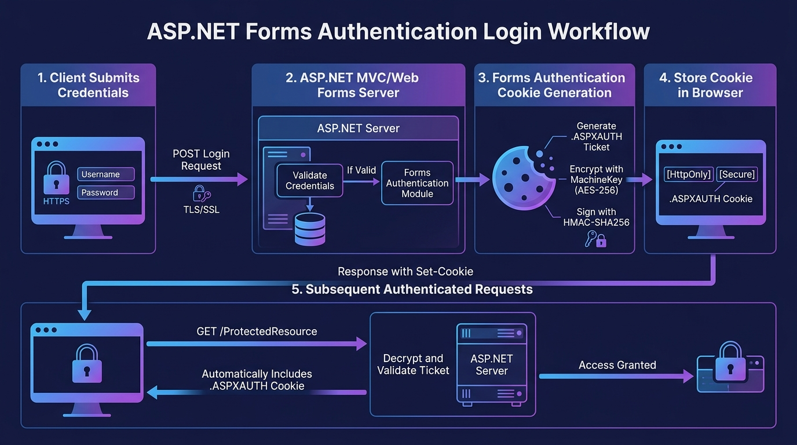
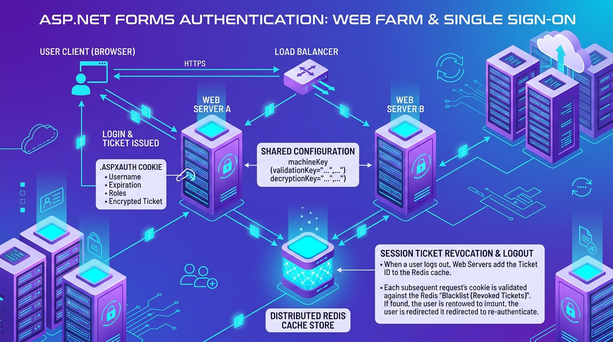

ASP.NET Forms Authentication Explained: From Login Cookies to Web Security
A beginner-friendly guide to classic ASP.NET Web Forms and MVC 3/5 with deep engineering breakdowns for intermediate developers and lead architect security blueprints. Explore authentication tickets, cookie cryptography, request pipelines, web farm synchronizations, and modernization paths to ASP.NET Core.
ASP.NET Forms Authentication Explained: From Login Cookies to Web Security
A beginner-friendly guide to classic ASP.NET Web Forms and MVC 3/5
Forms Authentication has secured enterprise ASP.NET applications for over two decades. Understanding how it operates from credential input to browser cookies, cryptographic machine keys, and request pipelines provides the essential baseline for securing legacy systems and migrating toward modern authentication architectures.
1 What is Forms Authentication?
Forms Authentication is a legacy authentication mechanism used by classic ASP.NET Framework applications, including ASP.NET Web Forms and ASP.NET MVC 3/5.
It allows an application to validate a user's credentials, issue an authentication ticket, and recognize the user on subsequent requests through an authentication cookie.
2
Configuring Forms Authentication in web.config
Forms Authentication is configured inside the <system.web> section of the application's web.config file.
<system.web>
<authentication mode="Forms">
<forms
loginUrl="~/Account/Login"
defaultUrl="~/Home/Index"
timeout="30"
slidingExpiration="true"
protection="All"
requireSSL="true" />
</authentication>
<httpCookies
httpOnlyCookies="true"
requireSSL="true" />
</system.web>Let's understand the important settings:
The login page to which an unauthenticated browser request is typically redirected when attempting to access a secured resource.
The default destination after successful login when no other return destination applies.
The Forms Authentication ticket lifetime, specified in minutes (e.g., 30 minutes).
Allows the framework to renew an eligible ticket under its renewal rules when half of the timeout window has passed.
Requests both encryption (AES for confidentiality) and integrity validation (HMAC for tamper detection) for the ticket.
Restricts the authentication cookie to HTTPS connections only, preventing cleartext transmission over HTTP.
Prevents ordinary JavaScript from directly reading the cookie via document.cookie, mitigating XSS cookie theft.
The default Forms Authentication cookie name is .ASPXAUTH, although the application can configure a different name using the name attribute (e.g. name=".PORTALAUTH").

Diagram Flow Breakdown: 1. Client submits credentials over HTTPS • 2. ASP.NET MVC / Web Forms controller validates credentials • 3. Forms Authentication Module generates .ASPXAUTH ticket, encrypts with AES-256 and signs with HMAC-SHA256 • 4. Browser stores cookie with HttpOnly and Secure flags • 5. Subsequent requests transmit the cookie automatically, where the server decrypts and grants access.
3 How does login work?
Imagine an employee named Arjuna logging into an Employee Portal.
The login process usually follows these steps:
Example in an ASP.NET MVC controller:
[HttpPost]
[ValidateAntiForgeryToken]
public ActionResult Login(LoginViewModel model)
{
if (!ModelState.IsValid)
return View(model);
bool isValidUser =
ValidateCredentials(model.Email, model.Password);
if (!isValidUser)
{
ModelState.AddModelError(
"", "Invalid email or password.");
return View(model);
}
FormsAuthentication.SetAuthCookie(
model.Email, false);
return RedirectToAction("Index", "Home");
}ValidateCredentials() represents application-specific code that must be implemented securely (such as querying SQL or LDAP). It is not a built-in Forms Authentication method.
FormsAuthentication.SetAuthCookie() issues the authentication cookie. It does not validate the password itself.
The false argument requests a nonpersistent cookie. The ticket still has an expiry time, and browser behavior also affects how long a session cookie remains available.
4 What is inside the authentication ticket?
A FormsAuthenticationTicket contains information such as:
| Ticket Field | Description | Example Value |
|---|---|---|
Name |
Username or user identifier associated with the ticket | "arjuna@enterprise.org" |
IssueDate |
UTC timestamp of when the ticket was issued | 2026-10-13 10:00:00Z |
Expiration |
UTC timestamp of when the ticket expires | 2026-10-13 10:30:00Z |
IsPersistent |
Boolean flag for session vs persistent across browser restarts | false |
Version |
Ticket schema version number | 2 |
UserData |
Optional application-defined string data | "SessionId:8102,Role:User" |
CookiePath |
Virtual path for which the cookie is valid | "/" |
For example, UserData might contain an application-defined session identifier. However, setting UserData = "Admin" does not automatically grant the Admin role. The application must establish trusted role information separately.
5 How is the ticket protected?
Classic ASP.NET Framework supports cryptographic protection of Forms Authentication tickets.
Two important concepts are:
Provides confidentiality by making protected ticket contents unreadable without the appropriate decryption key. Attackers inspecting network packets or browser cookies see only randomized cipher bytes.
Provides integrity validation, helping detect unauthorized changes to protected data. If an attacker modifies even a single bit of the ticket ciphertext, HMAC validation fails and the ticket is immediately rejected.
The precise algorithms depend on the framework version and configuration. protection="All" requests both encryption and validation.
What is machineKey?
The machineKey configuration specifies the cryptographic keys and algorithms used by ASP.NET to protect ViewState, Forms Authentication tickets, and session identifiers:
Key material used for cryptographic integrity validation and signing (HMAC-SHA256).
Key material used for symmetric encryption and decryption (AES).
The validation algorithm (e.g., "SHA1" or "HMACSHA256").
The encryption algorithm (e.g., "AES" or "Auto").
<system.web>
<machineKey
validationKey="C50B3C89CB21F4F1422FF158A5B42D0E8DB8CB5CDA1742572A487D9401E3400267682B202B746511891C1BAF47F8D25C07F6C39A104696DB51F17C529AD3CABE"
decryptionKey="8A9BE8FD67AF6979E7D20198CFEA50DD3D3799C77AF2B72FDBEEB3A9CE1A2B"
validation="HMACSHA256"
decryption="AES" />
</system.web>For applications deployed across multiple web servers, configure compatible key material and settings across the nodes that must process the same authentication tickets.
RNGCryptoServiceProvider) or the appropriate IIS tooling. Never invent predictable keys or commit real production keys to source control.
Cryptographic & Defense-in-Depth Model: Visualizing how machineKey protects the cookie at rest and in transit, while HttpOnly flags, HTML encoding, and CSP neutralize Cross-Site Scripting (XSS), and synchronized anti-forgery tokens with SameSite flags neutralize Cross-Site Request Forgery (CSRF).
6 Authentication vs. Authorization
Who are you?
Validates the user's identity (e.g. verifying Arjuna's credentials and reading the authenticated ticket).
What are you allowed to do?
Checks whether the verified identity has permission to perform a specific action or view a specific resource.
After ASP.NET processes a valid Forms Authentication ticket, the request can have an authenticated identity.
Important .NET types include:
Represents the decrypted authentication ticket metadata.
Represents the identity associated with the Forms Authentication ticket, implementing IIdentity.
Exposes core identity properties such as Name, AuthenticationType, and IsAuthenticated.
Represents the security context of the user on the current thread and supports role membership checks via IsInRole(string role).
An MVC controller can protect the Admin dashboard using:
[Authorize(Roles = "Admin")]
public ActionResult Dashboard()
{
return View();
}An authenticated user who is not an Admin must still be denied access.
[Authorize] attribute checks the current principal's role information (HttpContext.Current.User.IsInRole()); it does not automatically query the user-role database on every controller call.
7 How do we protect against XSS and CSRF?
Cross-site scripting (XSS)
XSS occurs when an attacker causes untrusted content to execute as script in a user's browser.
Useful protections include:
HttpOnlycookies to prevent ordinary JavaScript from directly reading the authentication cookie viadocument.cookie.- Razor's default HTML encoding for normal expressions such as
@Model.Name, ensuring injected HTML entities are escaped. - Avoiding
Html.Raw()for untrusted content. - A carefully configured Content Security Policy (CSP) as defense in depth.
HttpOnly does not eliminate XSS. Malicious script running in the browser can still perform unauthorized actions (such as firing AJAX requests) through the victim's active authenticated session!
Cross-site request forgery (CSRF)
CSRF occurs when a browser with an authenticated session is tricked into sending an unwanted request to an application.
Useful protections include:
@Html.AntiForgeryToken()in an MVC form.[ValidateAntiForgeryToken]on the corresponding state-changing POST/PUT action.- Appropriate cookie
SameSitesettings. - Validating authorization and request intent on the server.
SameSite Attribute Behavior:
• SameSite=Strict restricts cookies in all cross-site contexts.
• SameSite=Lax permits certain top-level safe navigations (such as clicking an external link) but generally excludes cross-site POST requests.
• SameSite=None permits cross-site cookie use subject to browser rules and requires Secure in modern browsers.
8
What are Global.asax and Global.asax.cs?
In classic ASP.NET, Global.asax declares application-level event handling, while Global.asax.cs contains the C# code-behind.
For example:
protected void Application_PostAuthenticateRequest(
object sender, EventArgs e)
{
var identity = Context.User?.Identity;
System.Diagnostics.Trace.WriteLine(
"Authenticated: " + identity?.IsAuthenticated);
System.Diagnostics.Trace.WriteLine(
"Username: " + identity?.Name);
}This code inspects the current identity after the authentication stage. It does not itself issue or validate the authentication cookie.
The FormsAuthenticationModule, part of classic ASP.NET's System.Web infrastructure, participates in processing Forms Authentication tickets during the request pipeline.
9 What happens in a web farm?
Imagine Server A issues Arjuna's authentication cookie, but the load balancer routes his next request to Server B.
Server B must have compatible machineKey settings and relevant Forms Authentication configuration to process the ticket.
HttpContext.Current.User?

Enterprise Topology: The Load Balancer routes client requests across Server A and Server B. Because both servers share matching machineKey definitions, either server can decrypt and authenticate Arjuna's .ASPXAUTH ticket. When Arjuna logs out, an immediate revocation entry is pushed to the Distributed Redis Cache Store, guaranteeing session invalidation across all nodes.
10 Logout and Server-Side Revocation
FormsAuthentication.SignOut() requests removal of the authentication cookie from the browser by writing an expired cookie header.
For stronger revocation requirements, an application can maintain a server-side session record and check whether the session is active before allowing protected requests. In a web farm, that state must be shared or consistently available across the relevant servers (such as in a distributed Redis cache).
This adds security but also introduces database or distributed-cache dependencies, latency, and consistency considerations.
★ Conclusion & Looking Forward
Forms Authentication provides the foundation for understanding legacy ASP.NET authentication: configuration, protected tickets, cookies, identity, authorization, and the request pipeline.
These concepts also help when learning modern authentication systems. However, ASP.NET Core cookie authentication, JWT bearer authentication, OAuth 2.0, OpenID Connect, and identity providers such as Microsoft Entra ID have different APIs and protocol responsibilities.
Understanding the legacy mechanism is a useful foundation for maintaining existing applications and planning secure modernization.
Pipeline Internals, Role-Based Authorization & Custom Principals
Moving beyond default configuration into real-world production engineering: mastering the IIS HttpModule request lifecycle, packing roles into ticket UserData, unpacking into GenericPrincipal, mitigating Open Redirection attacks, and defeating the sliding expiration AJAX trap.
1
The Full ASP.NET Request Pipeline & FormsAuthenticationModule Lifecycle
To write robust code in classic ASP.NET, you must understand exactly where Forms Authentication executes in the IIS Integrated Pipeline:
BeginRequest:
Request hits ASP.NET pipeline. URL routing resolves the controller or Web Form page.
AuthenticateRequest:
FormsAuthenticationModule intercepts the request, reads the .ASPXAUTH cookie, attempts decryption with machineKey, and constructs a FormsIdentity.
PostAuthenticateRequest:
Identity is authenticated! This is the ideal hook in Global.asax.cs to read custom roles from ticket.UserData and attach an IPrincipal.
AuthorizeRequest:
URL Authorization rules in web.config (<authorization>) check whether the user or role is permitted.
PreRequestHandlerExecute & Controller Execution:
Action filters execute, including MVC [Authorize] attributes, followed by the controller action.
EndRequest:
If status is 401 Unauthorized, FormsAuthenticationModule converts the response into a 302 Redirect to loginUrl.
2
Role-Based Authorization with UserData & GenericPrincipal
By default, Forms Authentication only knows the user's name; it has zero awareness of roles. If you put [Authorize(Roles = "Admin")] on a controller, ASP.NET checks HttpContext.Current.User.IsInRole("Admin"), which returns false!
The industry standard production solution is to store comma-separated roles in ticket.UserData during login, and unpack them in Application_PostAuthenticateRequest:
Step A: Packing Roles into the Ticket on Login
// 1. Fetch user roles from database (e.g. EF6 or Dapper)
List<string> userRoles = UserRoleService.GetRolesForUser(model.Email);
string rolesCsv = string.Join(",", userRoles); // e.g. "Admin,Physician,BillingManager"
// 2. Construct custom FormsAuthenticationTicket
var authTicket = new FormsAuthenticationTicket(
version: 2,
name: model.Email,
issueDate: DateTime.UtcNow,
expiration: DateTime.UtcNow.AddMinutes(30),
isPersistent: model.RememberMe,
userData: rolesCsv, // Storing roles in ticket!
cookiePath: FormsAuthentication.FormsCookiePath
);
// 3. Encrypt ticket using MachineKey
string encryptedTicket = FormsAuthentication.Encrypt(authTicket);
// 4. Create and append HttpCookie
var cookie = new HttpCookie(FormsAuthentication.FormsCookieName, encryptedTicket)
{
HttpOnly = true,
Secure = FormsAuthentication.RequireSSL,
Path = FormsAuthentication.FormsCookiePath,
Domain = FormsAuthentication.CookieDomain
};
if (model.RememberMe)
{
cookie.Expires = authTicket.Expiration;
}
Response.Cookies.Add(cookie);Step B: Unpacking Roles into GenericPrincipal in Global.asax.cs
protected void Application_PostAuthenticateRequest(object sender, EventArgs e)
{
HttpCookie authCookie = Request.Cookies[FormsAuthentication.FormsCookieName];
if (authCookie == null || string.IsNullOrWhiteSpace(authCookie.Value))
return;
try
{
// 1. Decrypt ticket
FormsAuthenticationTicket ticket = FormsAuthentication.Decrypt(authCookie.Value);
if (ticket == null || ticket.Expired)
return;
// 2. Parse roles from UserData
string[] roles = ticket.UserData.Split(
new[] { ',' }, StringSplitOptions.RemoveEmptyEntries);
// 3. Construct Identity & Principal
var formsIdentity = new FormsIdentity(ticket);
var principal = new System.Security.Principal.GenericPrincipal(formsIdentity, roles);
// 4. Attach to HttpContext and Thread
HttpContext.Current.User = principal;
System.Threading.Thread.CurrentPrincipal = principal;
}
catch (Exception ex)
{
// Decryption failed (tampered ticket or rotated machineKey)
FormsAuthentication.SignOut();
}
}[Authorize(Roles = "Admin,Physician")] now checks principal.IsInRole("Admin") and works instantaneously with zero database overhead on every HTTP request!
3 Manual Ticket Construction & Advanced Cookie Hardening
Why use manual ticket generation instead of FormsAuthentication.SetAuthCookie()?
- Custom Expiration:
SetAuthCookiehardcodes expiry to theweb.configtimeout. With manual tickets, you can set dynamic timeouts based on user tier (e.g., 15 mins for Admin, 8 hours for Customer). - UserData Storage:
SetAuthCookiecannot setUserData. - Cookie Attributes: Allows explicit control over
SameSite,Domain, andPath.
UserData can cause HTTP 400 Bad Request (Request Header Too Long) errors. If a user has more than 15 roles, store a Session ID in UserData and query distributed cache.
4
Defending Against Open Redirection Vulnerabilities in ReturnUrl
When an unauthenticated user hits /Admin/Dashboard, ASP.NET redirects them to:
/Account/Login?ReturnUrl=%2fAdmin%2fDashboard
https://yourbank.com/Account/Login?ReturnUrl=https://evil-phish.com/steal. If your login action redirects blindly via Response.Redirect(returnUrl) or FormsAuthentication.RedirectFromLoginPage(), the user is seamlessly redirected to the attacker's phishing site after legitimate login!
Always validate ReturnUrl using Url.IsLocalUrl():
[HttpPost]
[ValidateAntiForgeryToken]
public ActionResult Login(LoginViewModel model, string returnUrl)
{
if (!ModelState.IsValid || !ValidateCredentials(model.Email, model.Password))
{
ModelState.AddModelError("", "Invalid credentials");
return View(model);
}
FormsAuthentication.SetAuthCookie(model.Email, model.RememberMe);
// SECURITY CHECK: Verify returnUrl is strictly local to this application
if (!string.IsNullOrEmpty(returnUrl) && Url.IsLocalUrl(returnUrl))
{
return Redirect(returnUrl);
}
// Default safe fallback
return RedirectToAction("Index", "Home");
}5 The Sliding Expiration Trap & Session Timeout Desynchronization
Two insidious bugs frequently plague production systems with slidingExpiration="true":
Modern apps often run periodic background AJAX requests (e.g. notifications check every 60 seconds). Because each AJAX call counts as user activity, ASP.NET constantly slides and renews the auth cookie, so the user never logs out even if they walked away from their desk for 10 hours!
ASP.NET In-Proc Session state (Session["UserProfile"]) has a default 20-minute timeout. If Forms Authentication cookie timeout is set to 60 minutes, the session data expires while the user is still authenticated. Code accessing Session["UserProfile"].Id crashes with NullReferenceException!
slidingExpiration="false". Enforce absolute session expiration (e.g. 30 minutes), and display an interactive in-browser warning modal prompting the user to extend session actively before cutoff.
6 Cookieless Forms Authentication: High-Risk Antipattern
In early ASP.NET 1.1/2.0, Microsoft provided cookieless="UseUri" for mobile phones that lacked cookie support.
ASP.NET embedded the encrypted ticket into the URL string: http://portal.com/(F(XyZ123...))/Account/Dashboard.
1. HTTP Referer Leaks: If the user clicks an external link, the entire ticket is sent in the
Referer header to third-party servers.2. Browser History & Logs: Tickets get saved in browser history, proxy logs, and firewall logs.
3. Shoulder Surfing & Link Sharing: If Arjuna emails a link to a coworker, the coworker is immediately logged in as Arjuna (Session Fixation)!
Rule: Always enforce cookieless="UseCookies" across all environments.
7
Custom AjaxAuthorizeAttribute for SPA & AJAX Endpoints
When an unauthenticated AJAX request hits a controller decorated with standard [Authorize], ASP.NET returns HTTP 302 Redirect to the login HTML page. To JavaScript fetch() or jQuery $.ajax, this arrives as an HTTP 200 OK with HTML string, causing client JSON parsers to crash with Unexpected token < in JSON!
public class AjaxAuthorizeAttribute : AuthorizeAttribute
{
protected override void HandleUnauthorizedRequest(AuthorizationContext filterContext)
{
var httpContext = filterContext.HttpContext;
// Detect AJAX requests (X-Requested-With header)
if (httpContext.Request.IsAjaxRequest())
{
filterContext.HttpContext.Response.StatusCode = 401; // Unauthorized
filterContext.HttpContext.Response.SuppressFormsAuthenticationRedirect = true;
filterContext.Result = new JsonResult
{
Data = new { success = false, message = "Session expired. Please log in again." },
JsonRequestBehavior = JsonRequestBehavior.AllowGet
};
}
else
{
base.HandleUnauthorizedRequest(filterContext);
}
}
}Cryptographic Internals, Cross-Subdomain SSO & Core Migration
Under the hood of the CLR cryptographic engine: serialized binary ticket layout, post-mortem of the historic MS10-070 Padding Oracle attack, multi-application Single Sign-On across subdomains, distributed Redis token blacklisting, and bridge architecture to ASP.NET Core via DataProtection.
1 Deep Cryptographic Internals & Binary Ticket Layout
When FormsAuthentication.Encrypt() is called, how is the ticket actually serialized before encryption? It is not JSON or XML. ASP.NET serializes the ticket into an optimized, compact binary byte array:
| Offset | Field Name | Data Type | Byte Size | Details |
|---|---|---|---|---|
0x00 |
Header / Format | byte |
1 byte | Serialization version marker (typically 0x01) |
0x01 |
Ticket Version | byte |
1 byte | User-defined ticket version (e.g. 2) |
0x02 |
Issue Date Ticks | long (Int64) |
8 bytes | UTC DateTime.Ticks |
0x0A |
Expiration Ticks | long (Int64) |
8 bytes | UTC DateTime.Ticks |
0x12 |
IsPersistent | byte (bool) |
1 byte | 0x01 for persistent, 0x00 otherwise |
0x13 |
Name String | Length-prefixed UTF-8 | Variable | 1-byte length prefix followed by UTF-8 bytes of username |
| Dynamic | UserData String | Length-prefixed UTF-8 | Variable | 1-byte length prefix followed by UTF-8 bytes of custom data |
| Dynamic | CookiePath String | Length-prefixed UTF-8 | Variable | 1-byte length prefix followed by UTF-8 bytes of path |
| End | Null Terminator | byte |
1 byte | Sentinel byte 0xFF ensuring integrity |
.NET 4.5+ Purpose-Derived Key Derivation (SP800-108)
Prior to .NET 4.5, ASP.NET used raw machineKeys directly for both ViewState and FormsAuthentication. In .NET 4.5 (compatibilityMode="Framework45"), Microsoft introduced NIST SP800-108 Key Derivation Function (KDF).
ASP.NET mixes the root machineKey with distinct cryptographic "purposes" (e.g. "FormsAuthentication.Ticket.v1"). As a result, a compromise of a ViewState key cannot be used to forge an authentication ticket!
2 The Historic ASP.NET Padding Oracle Vulnerability (MS10-070 / CVE-2010-3973)
In 2010, security researchers Juliano Rizzo and Thai Duong published the POET (Padding Oracle Exploit Tool) attack targeting ASP.NET. It remains one of the most famous cryptographic vulnerabilities in web history.
Classic ASP.NET used AES in CBC (Cipher Block Chaining) mode with PKCS#7 padding. When a tampered ciphertext had invalid padding, ASP.NET returned an immediate CryptographicException resulting in an HTTP 500 error or distinct error timing.
By submitting carefully crafted ciphertexts byte-by-byte and observing whether a padding error occurred (the "Oracle"), attackers decrypted any Forms Authentication ticket and forged arbitrary Administrator cookies without knowing the secret machineKey!
Microsoft's Resolution: Microsoft deployed security bulletin MS10-070. ASP.NET was overhauled to use Authenticated Encryption (Encrypt-then-MAC). Before attempting AES decryption, ASP.NET verifies the HMAC-SHA256 signature using constant-time comparison. If the HMAC signature fails, the payload is rejected instantly, completely neutralizing the padding oracle!
3 Cross-Subdomain Single Sign-On (SSO) Architecture
Many enterprise systems run multiple distinct applications across subdomains (e.g., portal.company.com, billing.company.com, and ehr.company.com). How do we enable seamless Single Sign-On using Forms Authentication?
web.config:
Configure domain=".company.com" (note the leading dot) so browsers automatically send the cookie across all subdomains.
name=".SHARED_SSO_AUTH" and path="/" on all applications.
<machineKey>:
Both applications must configure identical validationKey, decryptionKey, validation="HMACSHA256", and decryption="AES".
targetFramework="4.8" and compatibilityMode="Framework45").
<system.web>
<authentication mode="Forms">
<forms
name=".COMPANY_SSO"
domain=".company.com"
path="/"
loginUrl="https://portal.company.com/Account/Login"
timeout="60"
protection="All"
requireSSL="true" />
</authentication>
<machineKey
validationKey="A1B2C3D4...[SAME ON ALL APPS]"
decryptionKey="E5F6G7H8...[SAME ON ALL APPS]"
validation="HMACSHA256"
decryption="AES" />
</system.web>4 Modernization Strategy: Bridging ASP.NET 4.8 to ASP.NET Core 8/9
When migrating a large enterprise monolith to ASP.NET Core using the Strangler Fig Pattern, users cannot be expected to log in twice when clicking between legacy pages and newly rewritten microservices.
Microsoft provides Microsoft.AspNetCore.DataProtection.SystemWeb to enable shared cookie authentication between classic ASP.NET 4.8 and ASP.NET Core:
// In ASP.NET 4.8 Startup.cs (OWIN)
public void Configuration(IAppBuilder app)
{
// Share Data Protection keys via Azure Blob or Shared UNC Folder
app.UseCookieAuthentication(new CookieAuthenticationOptions
{
AuthenticationType = "ApplicationCookie",
CookieName = ".SHARED_AUTH_COOKIE",
CookieDomain = ".company.com",
TicketDataFormat = new AspNetTicketDataFormat(
new DataProtectorShim(
DataProtectionProvider.Create(
new DirectoryInfo(@"\\shared\keys"),
builder => builder.SetApplicationName("CompanySharedApp"))
.CreateProtector("Microsoft.AspNetCore.Authentication.Cookies.CookieAuthenticationMiddleware",
"Cookies", "v2")))
});
}// In modern ASP.NET Core 8/9 Program.cs
builder.Services.AddDataProtection()
.PersistKeysToFileSystem(new DirectoryInfo(@"\\shared\keys"))
.SetApplicationName("CompanySharedApp");
builder.Services.AddAuthentication("Cookies")
.AddCookie("Cookies", options =>
{
options.Cookie.Name = ".SHARED_AUTH_COOKIE";
options.Cookie.Domain = ".company.com";
});5 Distributed Server-Side Session Revocation with Redis
As noted in the Beginner tier, FormsAuthentication.SignOut() only removes the browser cookie. If an attacker stole the cookie token over Wi-Fi, the attacker retains full access until ticket expiration.
Here is the lead architect blueprint for implementing instantaneous revocation across all web servers using a Distributed Redis Token Blacklist:
public static class SessionRevocationManager
{
private static readonly ConnectionMultiplexer Redis =
ConnectionMultiplexer.Connect("redis-cluster.internal:6379");
// Called on Logout, Password Change, or Admin User Suspension
public static void RevokeSession(string sessionTicketId, TimeSpan remainingLifetime)
{
var db = Redis.GetDatabase();
string key = $"revoked_ticket:{sessionTicketId}";
// Store in Redis with TTL matching ticket expiration so Redis memory auto-cleans!
db.StringSet(key, "revoked", remainingLifetime);
}
// Called in Application_AuthenticateRequest in Global.asax.cs
public static bool IsSessionRevoked(string sessionTicketId)
{
var db = Redis.GetDatabase();
return db.KeyExists($"revoked_ticket:{sessionTicketId}");
}
}6 Cryptographic Key Management & Secret Protection in CI/CD
Never store raw machineKeys in Git repositories. Here is a PowerShell automation script to generate cryptographically certified random keys, followed by config encryption:
function Generate-MachineKey {
$rng = [System.Security.Cryptography.RandomNumberGenerator]::Create()
# 64 bytes (512 bits) for HMAC-SHA256 validation
$valBytes = New-Object byte[] 64
$rng.GetBytes($valBytes)
$valKey = [System.BitConverter]::ToString($valBytes).Replace("-", "")
# 32 bytes (256 bits) for AES-256 decryption
$decBytes = New-Object byte[] 32
$rng.GetBytes($decBytes)
$decKey = [System.BitConverter]::ToString($decBytes).Replace("-", "")
Write-Host "<machineKey validationKey=`"$valKey`" decryptionKey=`"$decKey`" validation=`"HMACSHA256`" decryption=`"AES`" />"
}
Generate-MachineKeyEncrypting web.config in Production via aspnet_regiis:
:: Encrypts <machineKey> using DPAPI / RSA machine container
aspnet_regiis -pe "system.web/machineKey" -app "/EmployeePortal" -prov "RsaProtectedConfigurationProvider"